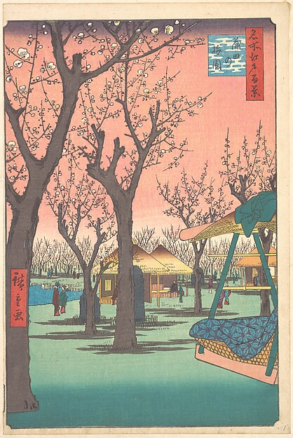
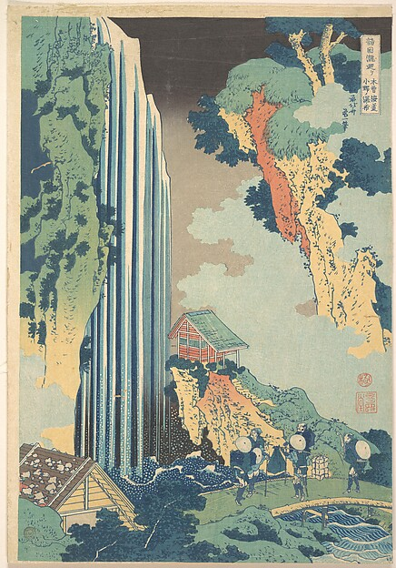
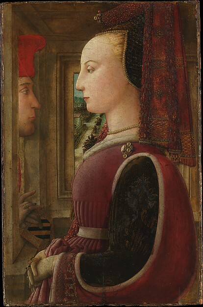

WordWeft
WordWeftWriter studio
Your stories
Published chapters and private drafts, in one place.
All 3Published 2Drafts 1
Recently edited

Spring Under the Bridge
Historical fiction · Updated 30 Sep 2026Published

The Waterfall Road
Adventure · Updated 30 Sep 2026Published

Letters from the Window
Short stories · Updated 30 Sep 2026Draft
Drafts are visible only to you. Story menus contain edit, preview and publication actions.